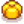

Tomate
Zur Navigation springen
Zur Suche springen
| Tomate | |||||||||||||||||||||||
| Saftig und ein wenig würzig mit einer Menge kulinarischer Anwendungsmöglichkeiten. | |||||||||||||||||||||||
| Information | |||||||||||||||||||||||
| Saat | |||||||||||||||||||||||
| Wachstumszeit | 11 Tage | ||||||||||||||||||||||
| Jahreszeit | |||||||||||||||||||||||
| Erfahrungspunkte | 12 Hofarbeit EP | ||||||||||||||||||||||
| Energie / Gesundheit |
|
||||||||||||||||||||||
|
|||||||||||||||||||||||
|
|||||||||||||||||||||||
Die Tomate ist eine Nutzpflanze in Stardew Valley. Sie wächst in 11 Tagen aus Tomaten-Saat heran.
Wachstum
Bei der Ernte gibt es alle 4 Tage jeweils eine Tomate, zugleich besteht die geringe Chance, dass man mehr als eine Tomate erhält.
| Stufe 1 | Stufe 2 | Stufe 3 | Stufe 4 | Stufe 5 | Erntereif | Nach der Ernte |
|---|---|---|---|---|---|---|
| 2 Tage | 2 Tage | 2 Tage | 2 Tage | 3 Tage | Gesamt: 11 Tage | Fortlaufend alle 4 Tage |
Wachstumskalender
| Basis | ||||||
|---|---|---|---|---|---|---|
| Mo | Di | Mi | Do | Fr | Sa | So |
| Landwirt und Geschwind-Wachs Vergleich | |||||||||||||||||||||||||||||||||||||||||||||||||||||||||||||||||||||||||||||||||||||||||||||||||||||||||||||||||||||||||||||||||
|---|---|---|---|---|---|---|---|---|---|---|---|---|---|---|---|---|---|---|---|---|---|---|---|---|---|---|---|---|---|---|---|---|---|---|---|---|---|---|---|---|---|---|---|---|---|---|---|---|---|---|---|---|---|---|---|---|---|---|---|---|---|---|---|---|---|---|---|---|---|---|---|---|---|---|---|---|---|---|---|---|---|---|---|---|---|---|---|---|---|---|---|---|---|---|---|---|---|---|---|---|---|---|---|---|---|---|---|---|---|---|---|---|---|---|---|---|---|---|---|---|---|---|---|---|---|---|---|---|---|
Regulär
|
|
|
| ||||||||||||||||||||||||||||||||||||||||||||||||||||||||||||||||||||||||||||||||||||||||||||||||||||||||||||||||||||||||||||||
| *Die 10% Tabelle gilt auch für Beruf Landwirt ohne Dünger. | |||||||||||||||||||||||||||||||||||||||||||||||||||||||||||||||||||||||||||||||||||||||||||||||||||||||||||||||||||||||||||||||||
|
|
| |||||||||||||||||||||||||||||||||||||||||||||||||||||||||||||||||||||||||||||||||||||||||||||||||||||||||||||||||||||||||||||||
Als Geschenk
| Reaktionen der Dorfbewohner
| |
|---|---|
| Mag es | |
| Gefällt nicht | |
Bündel im Gemeinschaftszentrum
Sie wird für das Bündel  Nutzpflanzen (Sommer) Bündel in der Speisekammer benötigt.
Rezepte
| Bild | Name | Beschreibung | Zutaten | Energie / Gesundheit | Buff(s) | Buffdauer | Rezeptquelle | Verkaufspreis | |||
|---|---|---|---|---|---|---|---|---|---|---|---|
| Auberginen-Parmesan | Würzig, käsig und wundervoll. |
|
|||||||||
| Bruschetta | Geröstete Tomaten auf einem knackigen Weißbrot. | N/A | N/A |
|
|||||||
| Fischeintopf | Riecht wie das Meer. Schmeckt aber besser. |
|
|||||||||
| Gemüseeintopf | Sehr nahrhaft. | N/A | N/A |
|
|||||||
| Pizza | Wegen der richtigen Gründe beliebt. | N/A | N/A |
|
|||||||
| Spaghetti | Ein Klassiker. | N/A | N/A |
|
|||||||
| Krabbencocktail | Eine üppige Vorspeise aus frisch gefangenen Garnelen. |
|
Aufträge
- Die Tomate kann zufällig im Sommer am Schwarzen Brett ausserhalb von Pierres Gemischtwarenladen für eine Belohnung von
 180 G und 150 Freundschaftspunkten von den Bewohnern angefragt werden.
180 G und 150 Freundschaftspunkten von den Bewohnern angefragt werden.
Trivia
- Die Tomate ist tatsächlich eine Frucht und kein Gemüse. Der mehrdeutige Status der Tomate ist Teil von Demetrius' "Sechs Herz" Ereignis.
| Nutzpflanzen | |
|---|---|
| Frühling | Blaue Jazz • Blumenkohl • Erdbeere • Grüne Bohne • Grünkohl • Kaffeebohne • Karotte • Kartoffel • Knoblauch • Pastinake • Rhabarber • Tulpe • Ungemahlener Reis |
| Sommer | Blaubeere • Hopfen • Kaffeebohne • Mais • Melone • Mohn • Peperoni • Radieschen • Rotkohl • Sommerkürbis • Sommerschmuck • Sonnenblume • Sternfrucht • Tomate • Weizen |
| Herbst | Amarant • Artischocke • Aubergine• Brokkoli • Feenrose • Kürbis • Mais • Preiselbeere • Rübe • Senfkohl • Sonnenblume • Süßkartoffel • Weintraube • Weizen |
| Winter | Pulvermelone |
| Spezial | Ananas • Kaktus-Frucht • Süße Edelsteinbeere • Taro-Wurzel • Tee Blätter • Uralte Frucht • Qi Frucht |